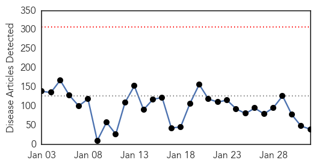
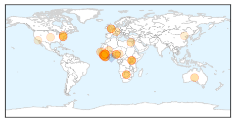

Ebola
30-Day Web Trend
0 alerts, 0 warnings

30-Day Twitter Trend
2 alerts, 0 warnings

Article Locations
Article Confidences

Top Articles:
- 0.999
- Utah Business
- 0.999
- Ebola Czar Leaves
- 0.999
- Number of new Ebola cases falls to lowest level since late June
- 0.997
- Sudan Vision Daily
- 0.996
- Ebola’s aftereffects in Pittsburgh
- 0.994
- Government must be more committed to improving the health sector
- 0.994
- Humanitarian groups say Ebola response must remain vigilant despite declining cases 30/01/2015
- 0.990
- Gloucester man in Oxford Ebola vaccine trial
- 0.989
- From the front lines of Ebola
- 0.989
- World's Largest Ebola Unit Dismantled As Outbreak Retreats
- 0.989
- Ebola epidemic far from over, but tide is turning
- 0.984
- New Africa Regional Chief Aims to Shake Up Maligned WHO Office
- 0.984
- New Africa Regional Chief Aims to Shake Up Maligned WHO Office
- 0.984
- New Africa Regional Chief Aims to Shake Up Maligned WHO Office
- 0.983
- Ebola cases drop, focus shifts to ending epidemic
- 0.975
- As Ebola ebbs in Africa, focus turns from death to life
- 0.973
- Sudan Vision Daily
- 0.967
- Ron Klain on His Tenure As America’s Ebola Czar -- NYMag
- 0.966
- A Coventry pathologist has returned from helping patients with Ebola in West Africa
- 0.959
- Ebola czar Klain to leave Feb. 15 after leading US response to outbreak
- 0.959
- In pursuit of next-generation Ebola stockpile vaccines
- 0.932
- Guinea: Guinea Ebola Situation Report 28 January 2015
- 0.929
- Eating and Praying in a Terrifying Battle With Ebola
- 0.925
- Ebola-hit Liberia delays school reopening
- 0.909
- Kampala begins testing of candidates for Ebola vaccine -
- 0.907
- Ebola-hit Liberia delays school reopening
- 0.897
- Five Things You Need To Know About Africa’s First Female Head of WHO AFRO
- 0.886
- QRC begins Ebola awareness campaign in Mauritania
- 0.879
- Plane, which carried Russian with suspected Ebola, disinfected prior to takeoff for Moscow
- 0.846
- Diseases without borders in a world of risks
- 0.844
- Diagnosis of Russian with suspected Ebola to be clear within 3-4 days
- 0.708
- Devant les leaders africains, le Secrétaire général parle des droits de la femme, de la lutte contre Ebola, du rétablissement de la paix, du combat contre le terrorisme et du respect de la constitutio
- 0.650
- Uganda sued over plan to ‘export’ 240 health workers
- 0.633
- Kenya : Robert Mugabe should soften stance against the West
- 0.611
- EBOLA Has Not Put an End to Female Circumcision in Sierra Leone
- 0.611
- EBOLA Has Not Put an End to Female Circumcision in Sierra Leone
- 0.579
- UN chief calls for solidarity against Ebola to remain on course
- 0.554
- Nigeria-based writer trolls ‘measles-ravaged country America’ on Twitter
- 0.537
- Soldiers back at base in Northern Ireland following Ebola mission
- 0.530
- China approves new polio vaccine, shows innovative muscle
Top Tweets:
- 0.925
- RT: Ebola is not the end of the world & it can be beaten: Nurse & Ebola survivor speaks at this week http://t.co/hLoa58Crtx Ebola…
- 0.923
- How Bad Data Fed the Ebola Epidemic - New York Times http://t.co/9gZMgxp7kT ebola EVD
- 0.912
- In pursuit of next-generation Ebola stockpile vaccines - Reuters http://t.co/p9c4nyT0GT ebola EVD
- 0.825
- As Ebola Ebbs in Africa, Focus Turns From Death to Life - New York Times http://t.co/R8RhFAt0iw ebola EVD
- 0.799
- Returning to 'The Ebola School' - Washington Post http://t.co/p3PjJ2WwgA ebola EVD
- 0.799
- Returning to 'The Ebola School' - Washington Post http://t.co/LMiZv6Mbng ebola EVD
- 0.794
- War on Ebola: Victory or “Mission Accomplished”? - legal Insurrection (blog) http://t.co/xKJCWvHO92 ebola EVD
- 0.735
- Kids in Liberia go back to school — in a building where dozens died of Ebola - Washington Post http://t.co/XP9oQndaNb ebola EVD
- 0.651
- New British Ebola case as military healthcare worker is flown back for monitoring - Daily Mail http://t.co/InHBVRSCRb ebola EVD
Swine Flu
30-Day Web Trend
8 alerts, 5 warnings
30-Day Twitter Trend
0 alerts, 0 warnings

Article Locations

Article Confidences
Top Articles:
- 1.000
- Swine flu in India: 3 people die in Telangana and 1 in Andhra Pradesh from H1N1
- 0.998
- Swine flu claims first victim in Odisha
- 0.998
- Former Rajasthan CM Ashok Gehlot down with swine flu
- 0.998
- 24x7 treatment for swine flu patients at SMS Hospital now
- 0.998
- Fresh case, swine flu tally in city 20
- 0.997
- Swine flu claims first victim in Odisha
- 0.997
- Nine more die of swine flu in Rajasthan, toll mounts to 48
- 0.997
- Gujarat: 39 new swine flu cases in a day, state toll rises to 38
- 0.996
- Swine flu in India: One tested positive for H1N1 in Odisha, total cases rise to 4
- 0.996
- 39 New Swine Flu Cases in a Day, State Toll Rises to 38
- 0.995
- Swine flu claims first victim in Odisha; man dies at SCB
- 0.993
- Former Rajasthan Chief Minister Ashok Gehlot Gets Swine Flu, Hits Out at the State Government
- 0.992
- Rajasthan ex-CM Gehlot tests positive for swine flu
- 0.992
- Former Rajasthan CM Ashok Gehlot tests positive for swine flu
- 0.990
- 32 tested positive for swine flu in AP
- 0.990
- Former Raj CM Ashok Gehlot tests positive for swine flu
- 0.989
- Swine Flu Claims First Life in Bhubaneswar This Year
- 0.989
- Former Rajasthan CM Ashok Gehlot tests positive for swine flu : India, News
- 0.987
- Woman dies of swine flu at PGI
- 0.985
- Gehlot tests positive for swine flu, recovering
- 0.974
- One more swine flu case found in Odisha
- 0.974
- One more swine flu case found in Odisha
- 0.969
- Odisha Reports First Swine Flu Death of the Year
- 0.962
- NIV Testing AP, TS Patients for H1N2, H2N3 Strains Too
Top Tweets:
-
No tweets found for Feb 01, 2015